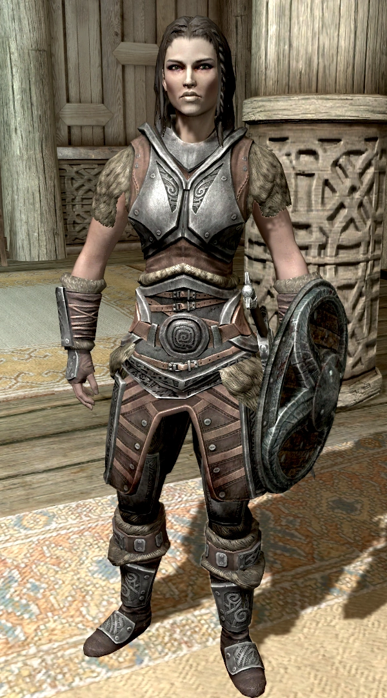

About Lydia
Lydia is a former Whiterun guard who swore to carry the Dragonborn's burderns as Housecarl.
Lydia full body.
Traits
- She fights with single-handed weapons and shields.
- She is loyal and will not snitch on the Dragonborn if they commit a crime.
- Is quite infamously sarcastic with her Thane.
Other Details
While being quiet and generally unobstructive, Lydia is dumb af. She will run in front of your arrows and point out caves you've just exited from. She does not use magic, but will equip any staff you give to her. To read more about her, click here. Other facts about her are:
- She specializes in heavy armor.
- Once the Book of Love quest is completed, she is eligible for marriage.
- Lydia has literally no backstory in the game, why would you do this to me Bethesda.